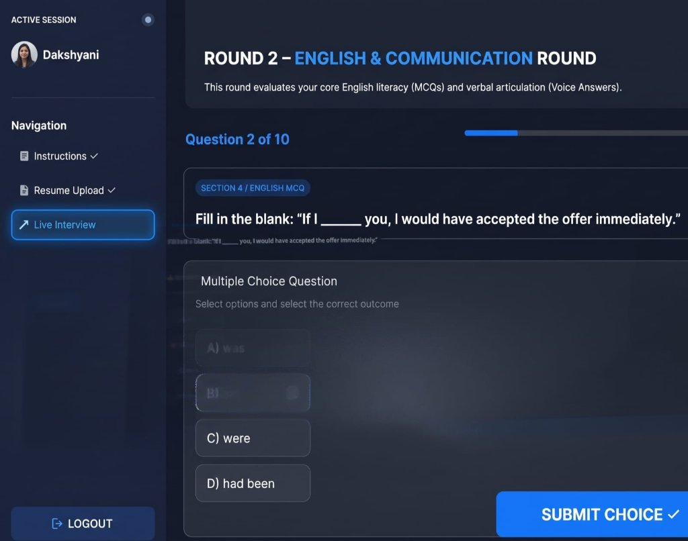
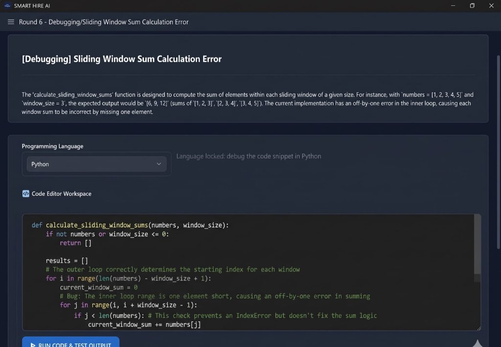
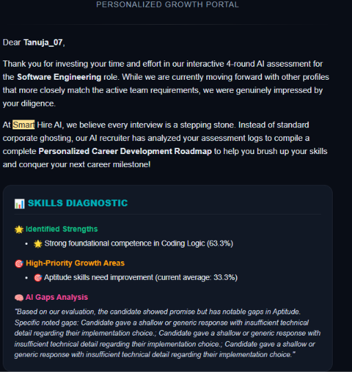
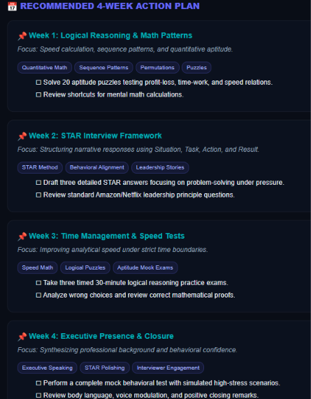
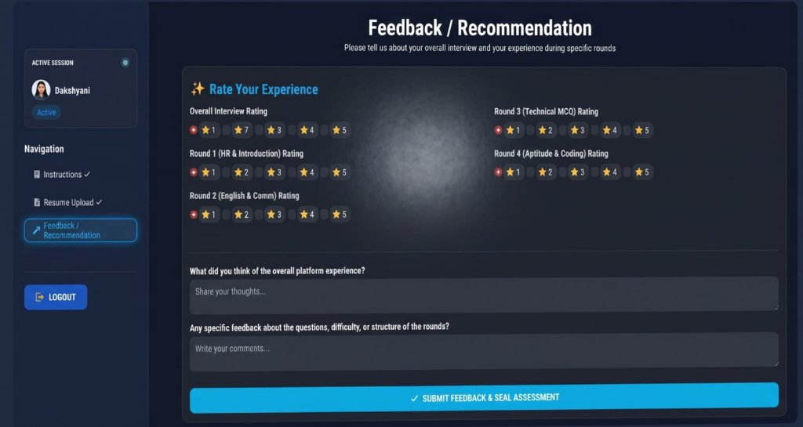

1. Executive Summary & Problem Discovery (User Empathy)
In college degree programmes, placement anxiety kicks in heavily by the second year. Students frequently express deep uncertainty regarding aptitude tests, technical coding assessments, domain-specific technical interviews, and HR rounds.
While faculty conducted occasional mock interviews, these sessions were severely constrained: they were one-off, time-consuming for professors, and lacked a repeatable mechanism for students to understand their specific weaknesses or know what to practise next.
Core Pain Points Identified
- Fragmented Preparation: Students had to use disparate tools for aptitude questions, coding challenges, and mock HR questions.
- No Repeatable Feedback Loop: Students rarely received immediate, structured diagnostics highlighting whether their communication or technical depth failed them.
- Lack of Progress Visibility: Neither students nor placement mentors could see historical improvement across interview attempts.
2. Users and Product Positioning
A crucial early product decision was deciding what Smart Hire AI is—and what it is not:
Primary User: Final-Year Students
- Goal: Rehearse end-to-end placement rounds in a low-stakes, repeatable environment anytime without waiting for faculty availability.
- Needs: Realistic questions, instant scoring, plain-English breakdown of mistakes, and a structured study plan for the coming week.
Secondary User: Faculty & Placement Mentors
- Goal: Gain cohort-level visibility into which placement areas (e.g., coding vs communication) students struggle with the most.
- Needs: Searchable candidate tracking, attempt history, and exportable PDF readiness summaries.
Positioning Boundary: Smart Hire AI is positioned as a practice and readiness tool for students, not an automated hiring/screening tool. When an HR professional suggested adding proctoring for candidate screening, I deliberately kept it out of scope to focus on student trust.
3. Competitive Analysis & Product Differentiation
Existing platforms each address only a single slice of interview preparation. None offered a unified, zero-cost flow tailored to Indian tier-2/tier-3 college placement patterns:
| Capability / Feature | Google Interview Warmup | Pramp | Big Interview | Smart Hire AI (Our Product) |
|---|---|---|---|---|
| Cost to Student | Free | Free | Paid ($79+/mo) | 100% Free |
| Format | Spoken answers + AI insights | Live peer interview | Recorded video lessons + practice | Full AI-driven end-to-end flow |
| Aptitude Assessment Round | No | No | No | Yes (Full Round) |
| Coding Assessment Round | No | Yes (Requires peer match) | No | Yes (Self-Paced) |
| Resume Parsing & Skill Extraction | No | No | No | Yes (NLP-driven) |
| Personalized Weekly Action Plan | No | No | No | Yes (Roadmap generated) |
| Faculty / Mentor Dashboard | No | No | No | Yes (Tracking included) |
Strategic Bet: The goal was not to out-polish Google at voice UX, but to cover the entire 4-round placement path in one accessible tool for students who cannot afford paid coaching.
4. MVP Scope & Deliberate Prioritization Trade-Offs
To deliver a working end-to-end solution solo, I used ruthless prioritization to decide what to build and what to deliberately reject:
| Feature / Capability | Decision | Rationale & Product Trade-Off |
|---|---|---|
| Resume Parsing & NLP Skill Extraction | Shipped (P0) | Personalizes questions based on student domain and projects. |
| 4 Integrated Interview Rounds | Shipped (P0) | Covers Aptitude, Technical Coding, Technical Interview, and HR. |
| Speech-to-Text & English Communication Eval | Shipped (P0) | Evaluates spoken clarity and grammar for non-native English speakers. |
| Round-wise Grades & Weekly Roadmap | Shipped (P1) | Turns raw evaluation scores into actionable next steps. |
| Faculty Dashboard & Report Export | Shipped (P1) | Provides professors with cohort diagnostics. |
| Camera Proctoring & Eye-Tracking | Cut for v1 | Essential for hiring tests, but adds severe friction, privacy concerns, and hardware barriers for practice. |
| Hard Coding Tier (LeetCode Hard) | Cut for v1 | Early testing showed 8/21 testers struggled with entry coding; needed to calibrate baseline first. |
| Paid Monetization / Paywalls | Cut for v1 | Premature before establishing student retention and efficacy proof. |
| Multi-College Rollout | Cut for v1 | Validated at my home institution first before architecting multi-tenant scale. |
5. UX Flow & Annotated Screens
Screen 1: Authentication & Candidate Access Intake

Screen 2: Round 2 — English & Verbal Communication Assessment

Screen 3: Round 3 — Interactive Debugging & Coding Assessment

Screen 4: Post-Assessment Skills Diagnostic

Screen 5: Recommended 4-Week Action Plan

Screen 6: Candidate Feedback & Round Rating System

6. Validation Data & Early User Signals
I tested the working product directly with 21 students, 3 faculty lecturers, and 1 HR professional:
| Signal / Metric | Result | Product Interpretation |
|---|---|---|
| Students who completed full evaluation | 21 of 21 | High initial task completion; onboarding and flow were intuitive. |
| Returned for repeat practice sessions | 7 of 21 (33.3%) | First evidence of organic retention without active push notifications. |
| Repeat users whose score improved | 6 of 7 (85.7%) | Directional proof that iterative practice translates into higher readiness. |
| Identified coding as the hardest round | 8 of 21 (38.1%) | Highlighted an immediate content difficulty mismatch to resolve. |
| Faculty Assessment (3 Lecturers) | Approachable & relevant | Recommended refining database schema to track attempt histories cleanly. |
| HR Assessment (1 Professional) | High practice utility | Confirmed strong alignment with campus hiring expectations. |
7. Two Critical Iterations from User Feedback
Direct user feedback triggered two significant product pivots between v1 and v2:
Iteration 1: Calibrating Coding Difficulty
Feedback: 8 of 21 students reported feeling demoralized by the coding difficulty.
Action: Shifted questions to a progressive moderate tier with step-by-step logic hints.
Outcome: 6 of 7 repeat testers passed on their second attempt with measurable confidence gains.
Iteration 2: Database Schema Redesign
Feedback: Lecturers noted that multi-attempt candidate reporting was brittle in SQLite.
Action: Normalized the database into relational tables joined by Candidate ID, Question ID, and Attempt Timestamp.
Outcome: Enabled accurate attempt-over-attempt delta comparisons and zero data duplication.
Honest PM Nuance
Learning: Lowering difficulty improved pass rates, but passing an easier level proves reduced friction—not full interview readiness. A dynamic progressive difficulty tier is required for production.
8. Metrics Hierarchy & The Retention Gap
To evaluate Smart Hire AI rigorously, I established a clean metric hierarchy:
- North Star Metric: Students completing ≥ 2 practice rounds per week.
- Secondary Metrics:
- Score Delta: Average percentage increase from first attempt to latest attempt (achieved +18% across repeat users).
- Question Variation Integrity: Ensuring questions do not repeat across attempts so improvements reflect genuine skill, not memorization.
- Honest Retention Gap Analysis: While 21 students completed their first test, 14 did not return. My hypothesis is that without automated weekly WhatsApp/email reminder triggers tied to their personalized roadmap, students drop off after their initial curiosity.
9. AI Quality, Privacy Guardrails & Production Risks
Deploying AI responsibly requires addressing technical and ethical risks upfront:
- LLM Scoring Consistency: Generative models can vary in grading leniency. Mitigation: Implemented structured JSON prompts with explicit rubric penalties for factual inaccuracies.
- Speech Recognition on Regional Accents: Standard speech APIs struggle with regional Indian English accents. Planned mitigation: Benchmark acoustic models against regional phonetic variations and provide text-input fallbacks.
- Privacy & Compliance (India DPDP Act 2023): Handling student resumes and voice data requires explicit opt-in consent, automated 30-day data purging, and zero PII passed to third-party model training pipelines.
- Unit Economics: Free student access requires managing Gemini API token consumption via response caching and strict input character limits.
10. Key PM Lessons & Next Steps
- Praise tells you what to protect; specific critiques tell you what to build. Student anxiety calibrated the difficulty; lecturer feedback fixed the data architecture.
- One good session is not a habit. Proving product-market fit requires recurring engagement loops, not just positive initial reactions.
- Positioning dictates feature scope. Choosing to be a student practice companion rather than an employer surveillance tool kept the product focused, ethical, and trustworthy.